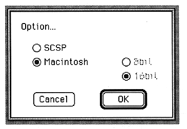

Audio Output
Select the output destination for PlayAudio. Select Mac or SCSP with the radio button.
Output bit
Select the number of output bits. This is valid when SCSP is selected for Audio Output.
Select 8bit or 16bit with the radio button.